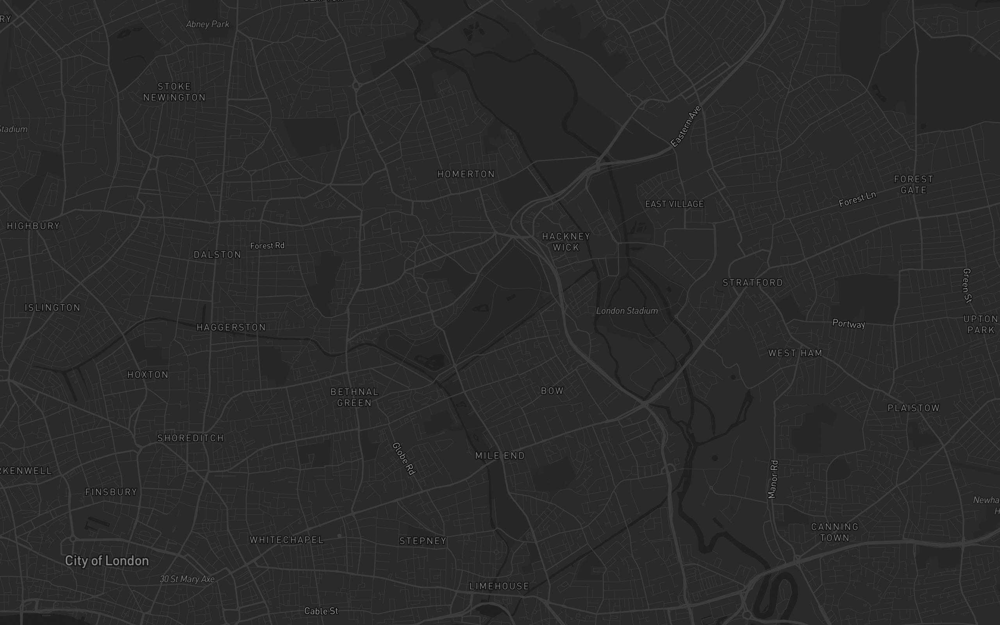

The command centre
for architects and
property developers.
Your practice owns its data, its memory and its own model, and plugs in whichever AI is best this month.
Too many tools.
Nothing connects.
Every quarter a new subscription. None of them knows the practice, the site or the policy.
Nobody
keeps why.
Tools change, models change, people leave. The reasons behind the decisions go with them.
You don't own your practice's memory. You rent it.
The model, the tools and what the practice knows all sit in someone else's software. Stop paying, and it is gone.
Your AI is lying to you. Politely.
AI text sounds right, has no source, and gets signed anyway. An architect is liable for decades. In Plintoo every answer comes back with its source, and nothing is kept until a person accepts it.
The model was never the problem.
Everything around it is.
Most of the work doesn't need the most powerful model.
A sledgehammer to crack a nut, every day, at the top price.
The AI and the tools around it are the same for every practice.
None of it knows the planning policy, the site or how your practice works.
The value moves to what the practice owns.
Its own data, its own memory, its own methods.
One place to run them all.
Any team · One record
Keep every reason.
Plintoo is the harness for architecture: the software around the AI model. The tools it runs, the data it reads, the methods it follows and the checks it can't skip.
Run every tool
from one place.
- Documentswritten and edited with the AI, with sources
- Mapssites, constraints and planning layers
- 3DRhino, shown in the Plintoo viewer
- Assetsthe practice's images and files
The practice's
own memory.
- Answers with sourcesyou can see where every answer came from
- Decisionswhat was decided, why, the evidence and who owned it
- Sharedthe whole team works from the same memory
Its own workflows
and model.
- Site appraisala full site report, from the address
- Planningpolicy, precedent and past applications
- Development appraisalthe numbers behind a scheme
- Own modeltrained on architecture, partly trained already
doesn't need the most powerful model
The top model costs up to about a hundred times a small one. With its own data and memory, its own tested workflows and its own model, a practice runs the 95% for less, and keeps the top model for the hard 5%.
95 / 5 is the founder's estimate from twenty years of practice. Price difference from published AI model list prices.
Connected to the whole record.
More valuable with every project.
Built for the people
who run the work.
Architect
One chat every day. Answers with sources. Accepts the work before it is kept.
Project lead
Decision records, fee and scope alerts, specification drafts.
Partner
Pricing from past jobs. Extra fee claims with the evidence behind them.
Practice admin
Sets up models, allowances and workflows for the whole office.
"I've been an architect for twenty years, running projects and the technology behind them. Today I have the most powerful AI models on my desk, and I still can't use them properly on real work. The model was never the problem. Everything around it is."
Questions.
Q.01What is Plintoo?
The harness for architects and property developers: the software around the AI model. It gives a practice its own data and memory, its own tested workflows and its own model, and lets it plug in any AI.
Q.02Which AI models can we use?
Any. Plintoo is model-agnostic. Change the model and the practice keeps its data, its memory and its methods.
Q.03Who owns our data?
Your practice does. Its files, its memory and its decisions belong to the practice, not to Plintoo and not to the AI provider.
Q.04What happens if Plintoo stops?
[TO CONFIRM: the export and self-hosting promise, once it works end to end.]
Q.05Is it ready?
Plintoo is in its pilot with a first small group of practices. Everything marked "In the pilot" on this page is being tested on real work with them.
Change every tool.
Keep every reason.
We are setting up the first practices by hand. Leave your email and we will be in touch.